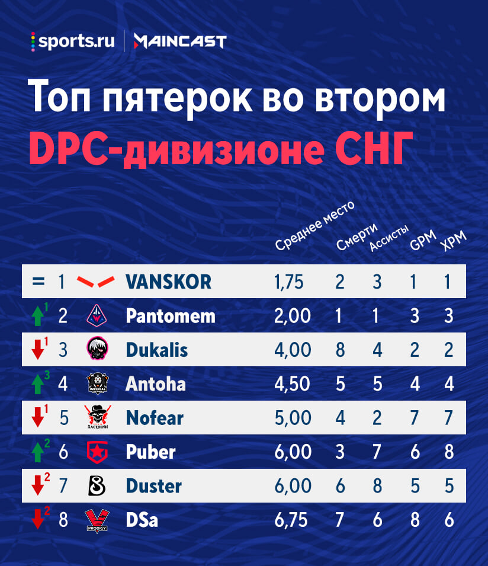

Топ пятерок второго дивизиона

- HellRaisers лучшие по показателям: только Young G не стал первым на своей роли. Cooman, LIL ME ALONE и VANSKOR остались лидерами, Resolut1on вышел на топ-1 среди оффлейнеров. Статистика большинства игроков HR намного сильнее, чем у соперников по дивизиону. Поэтому состав Резоля – главный претендент на победу в лиге.
- По-прежнему все хорошо у Winstrike: ни один игрок не понизился в рейтинге, при этом Pantomem вышел на 2-е место. На данный момент только Chshrct не входит в топ-2 на своей позиции. Команда Ямича – уверенно вторая по показателям. У Winstrike наверняка будут проблемы в ближайшем матче с HellRaisers, но победа над PuckChamp откроет им дорогу к выходу в первый дивизион.
- Разочарование недели – B8. После поражения в серии с IPG состав Dendi опустился на предпоследнее место. Индивидуальная статистика также просела: RdO и Duster потеряли по 2 позиции. Капитан B8 закрепился на последней строчке, Sexyfat пока остановился в шаге от 8-го места. Из позитивного можно выделить только адаптацию [T]SA – новичок команды поднялся на седьмую позицию. Его показатели все еще значительно хуже, чем у Иллюжена, которого мы убрали из-за слишком малого числа сыгранных карт (как и Ватсона из Хастлеров), но надежда на прогресс есть.
- Третий тур неоднозначно отразился на статистике PuckChamp. Krylat и Dukalis понизились в рейтинге, при этом MeLes и Astral поднялись в топ-3, а BOBiNA сократил отставание от Young G. Пока все игроки PuckChamp, кроме керри, входят в тройку лучших на своей позиции, что отражает ситуацию в таблице дивизиона. У главной сенсации лиги по-прежнему хорошие шансы на повышение в классе, и ближайшая серия с VP.P – отличная возможность поднять показатели.
- Налаживаются дела у Gambit: статистика почти всех игроков команды заметно улучшилась. Наибольший рывок в рейтинге сделал Xannii, ворвавшийся в топ-3 с седьмой строчки. Также классно сыграли XSvamp1Re и Puber, поднявшиеся на 2 места. Улучшил показатели в целом Blizzy, но этого не хватило, чтобы уйти с последней позиции. Неплохо сыграл и Lorenof, который понизился в рейтинге только из-за высокой плотности в таблице мидеров и дополнительного критерия. Матчи с HR и B8 станут определяющими для перспектив Gambit.